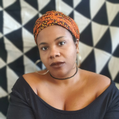

2025 Scholars
Luz Mely Reyes
Investigative journalist and advocate for press freedom in Latin America.
View Profile
Lester Hamlet
Cuban filmmaker dedicated to exploring social change and cultural identity through cinema.
View ProfileTalita Trizoli
Brazilian feminist art historian and curator dedicated to promoting gender equity in Latin America.
View Profile

Tessa Mars
Haitian visual artist exploring identity, resilience, and community through vibrant contemporary art.
View Profile